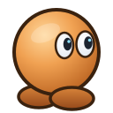

Запускаю бота
Поднимаю окно бота, обычно это пара секунд.
Не нашёл папку бота
Приложение ищет папку, где лежат start.mjs и src. Проще всего распаковать приложение внутрь папки бота как app-win. Или укажи папку вручную.

Поднимаю окно бота, обычно это пара секунд.
Приложение ищет папку, где лежат start.mjs и src. Проще всего распаковать приложение внутрь папки бота как app-win. Или укажи папку вручную.